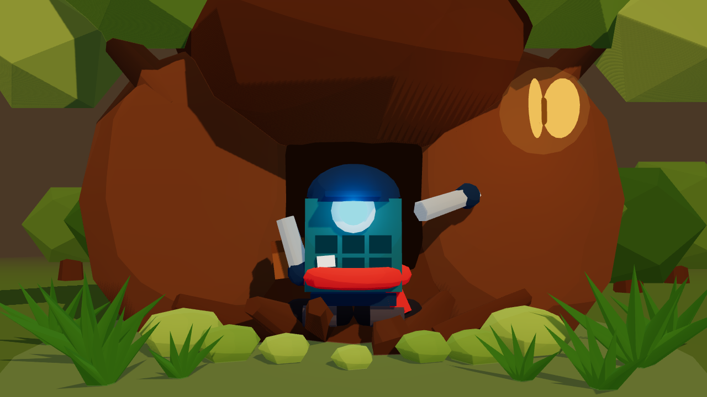
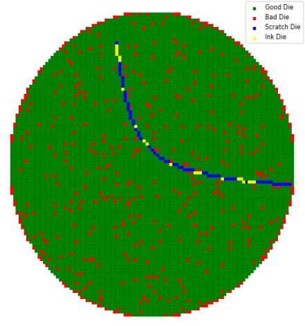
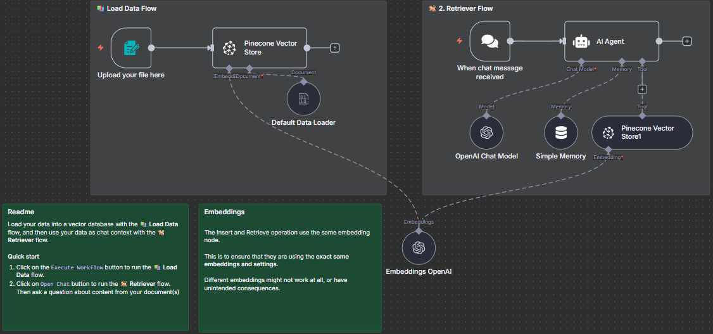
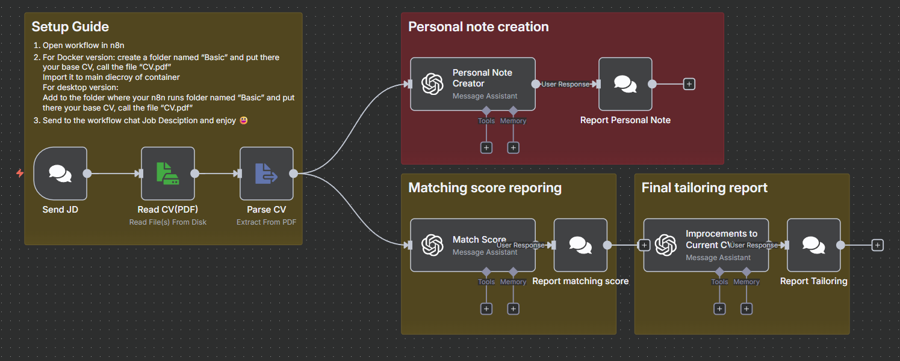

The short version
From messy data to clear movement.
I work across the seam between rigorous engineering and visual thinking. That means reliable pipelines, useful automations and interfaces that leave enough room for curiosity.
Selected work
Systems with a point of view.
Data and automation projects, presented with enough context to show how they work.

Wafer scratch detection
Spatial feature engineering and explainability for semiconductor map patterns.
Read the case study ↗
Retrieval, routed
RAG and n8n experiments that turn scattered knowledge into usable operations.
Open the thread ↗
CV Tailors
A workflow that helps people move from a role description to a sharper application.
See the workflow ↗What I bring
AI systems
LLMs, RAG, embeddings, agents and evaluation-minded workflows.
Data foundations
Python, SQL, Spark, APIs and infrastructure that hold up under use.
Creative interfaces
JavaScript, React, three.js and visual experiments with a pulse.
04 / next signal